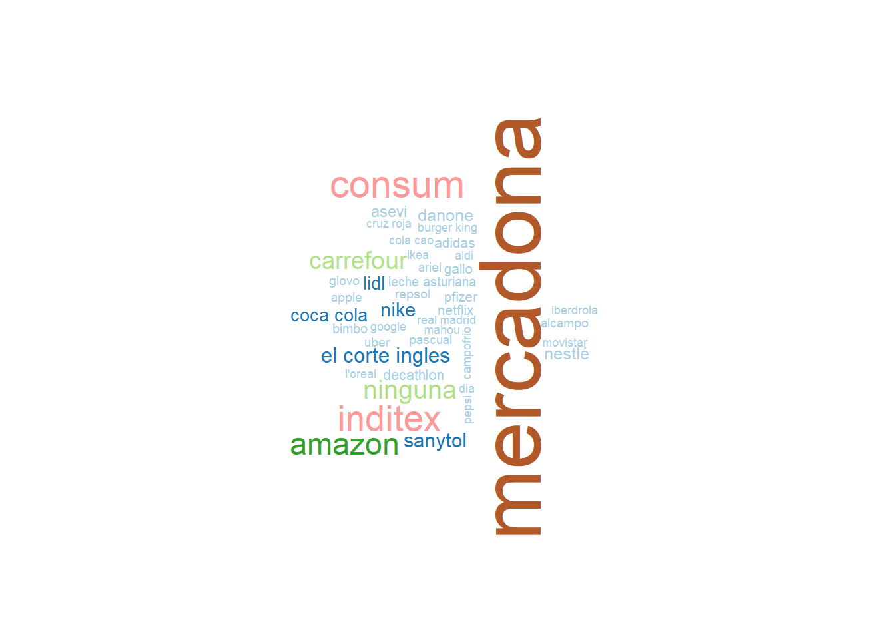

Enumera las 3 primeras marcas que te vienen a la mente, y que más te han impresionado por sus actividades durante la pandemia de la COVID-19.

¿Cómo valoras la reacción y gestión de la pandemia de las siguientes organizaciones? Utiliza una escala de 1 a 10, donde 1 es muy mala gestión y 10 muy buena gestión.
¿Cómo valoras la reacción y la gestión de la pandemia de cada uno de los siguientes tipos de empresas y sectores? Utiliza de nuevo una escala de 1 a 10, donde 1 es muy mala gestión y 10 muy buena gestión.